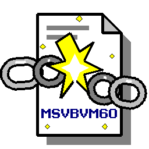
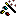
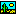
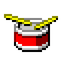
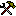
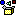
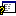

VB6 LinkAlchemyVB6 LinkAlchemy
Allows creation of native win32 apps in VB6 using a bunch of linking voodoo. Select what you need and press Compile to get a build that carries its own runtime (no more MSVBVM60.dll), a manifest, an icon ressource or native C code.

What it does
Gallery
assets/gallery/: 1.png, 2.png, 3.png and so on.
ToolsThe Linker and the four patch tools are separate programs. The installer sets them up, and each patch tool also runs from the command line.
Linker
The front end you see. VB6 starts it instead of LINK.EXE, and it runs the other tools in order before handing over to the real linker, LINK2.EXE.
- General
- Picks
main.obj(auto-detected as the object that defines___vbaS), the build options, the manifest settings and the list of link arguments, which you can select, add, reorder or load from a file. - DLL
- Only for DLL builds. Choose ActiveX or standard, filter the function list, pick the exports and create the .DEF file, or let it regenerate on every compile.
- Icon
- Only for EXE builds. Choose the image, the sizes from 256 down to 16 pixels and the colour depths, or remove the icon.
- Info
- Shows which steps will run and whether each tool is found.
- Compile
- Runs every step, including the link.
- Copy commands
- Copies the commands it would run, without running them.
- Create OBJs
- Runs every step except the link, then renames the OBJs to
name_sav.objso VB6 can't delete them after the build. - Run in CMD
- Runs the steps in a console window.
- Configs
- Configs live in
vblinker.iniin the project directory. Tool paths live invblinker.iniin the /VB98/ direcotry next to the Linker.
VBStatic
Embeds MSVBVM60.DLL into the main OBJ, so the result is one object with the whole VB runtime inside. It works for EXEs, ActiveX DLLs and Standard DLLs.
VBStatic.exe msvbvm60.dll main.obj [/DLL:ACTIVEX | /DLL:STANDARD] [/NOICON] [/OUT:file]
- Code
- The runtime's code sections are merged into one, its relocations become COFF relocations, and its imports are rebuilt so the linker writes the import table for your EXE.
- Entry
- A new entry point calls the runtime's
DllMainand then jumps to your project's own entry,___vbaS. - Resources
- The runtime's string tables, type libraries and version data are merged in. Yours win when names clash.
- /NOICON
- Prevents the runtime's icons from becoming the Explorer icon. However they need to stay in the file because the runtime needs them
- /DLL:ACTIVEX
- Keeps DllGetClassObject, DllRegisterServer and the other ActiveX exports.
- /DLL:STANDARD
- Removes the ActiveX exports so you can export your own, for example with
/EXPORT:foo.
Linking the result needs no default libraries: /NODEFAULTLIB with entry _VBStaticEntry for an EXE, or _VBStaticDllEntry@12 for a DLL. The Linker's "Adjust link args" option sets this for you.
VBMF
Embeds an application manifest into the main OBJ as an RT_MANIFEST resource. The Linker writes the manifest for you from the General tab and reads your program's name and version from its ressources.
VBMF.exe main.obj main.exe.manifest [/ID:n] [/OUT:file]
- /ID:1
- Manifest for an EXE. (Default)
- /ID:2
- Manifest for a DLL.
- Re-running
- A manifest with the same ID is replaced. Icons, version info and other resources are kept, and VBMF and VBStatic can run in either order.
VBIcon
Replaces the default icon that VB6 writes into the main OBJ. Everything else is kept untouched, including your own icons, version info, manifests and the rest of the resources.
VBIcon.exe main.obj icon.png [/RES:256,48,32] [/DEPTH:32,8,4] [/STRETCH] [/OUT:file] VBIcon.exe main.obj [/REMOVE] VBIcon.exe main.obj [/LIST]
- Input
- JPEG, PNG, BMP or ICO.
- /RES
- Sizes from 256, 128, 64, 48, 32 and 16. By default every size up to the smaller side of your image.
- /DEPTH
- 1, 4, 8, 24 or 32 bit. The 256 pixel size at 32 bit is stored PNG-compressed.
- Quality
- Smooth bicubic scaling, transparency kept, and error-diffusion dithering for the low colour depths.
- /STRETCH
- Ignores the aspect ratio. By default the image is fitted with transparent bars.
- /REMOVE
- Deletes the VB6 icon and adds nothing. Use "Create empty icon resource" in the Linker when VBStatic is also on.
VBExtern
VB6 builds a small stub for every Declare. Conveniently VB6 writes all stubs into the main OBJ. VBExtern rewrites the ones that use the library name <extern> into a direct jump to a symbol the linker resolves, so you can link C code compiled elsewhere.
Private Declare Function foo Lib "<extern>" Alias "bar" (ByVal a As Long, ByVal b As Long) As Long
Is equivalent to:
extern "C" int __attribute__((stdcall)) foo(int a, int b) asm("_bar");
VBExtern.exe main.obj [/OUT:file] [/LIST] [/PLACEHOLDER:name] [/PREFIX:]
- Symbol
- A prefix (default
"_") plus the alias, or the declared name if there is no alias. - /LIST
- Only lists the
Declarestatements. - /PLACEHOLDER:name
- Uses
Lib "name"name as the marker. (default"<extern>") - /PREFIX:
- Sets a different symbol prefix or removes it entirely. (default
"_") - /OUT:file
- Writes a new file instead of patching in place.
In VB6, make your EXE or DLL as usual. VB6 starts the Linker, and its window opens with your last settings. When you press Compile, the steps you selected run in this order on the one main OBJ:
- VBExtern: Turns
Declarestatements that use<extern>into linker externs. - VBIcon: Replaces or removes the VB6 icon.
- VBStatic: Fuses the VB runtime into the main OBJ.
- VBMF: Embeds the manifest.
- LINK2.EXE: The real linker produces your EXE or DLL.
The tools patch the OBJ in memory without temporary files. A pristine copy is kept, so if a step fails the OBJ is put back and you can fix the problem and press Compile again.

VB6 LinkAlchemy SetupInstall in three steps
- Download the setup program from the latest GitHub release.
- Run it. Everything you need is installed automatically.
- In VB6, make your EXE or DLL. The Linker opens by itself: check the options and press Compile.

FAQDoes my program still need MSVBVM60.DLL?
No, not when you embed it. VBStatic fuses the runtime into your EXE or DLL, so the target PC needs no VB6 runtime.
Why does a window open when I make my EXE?
The Linker takes the place of LINK.EXE. VB6 starts it, it runs the tools you selected, and then it hands over to the real linker, LINK2.EXE.
What happens if a step fails?
The tools patch the OBJ in memory and keep an untouched copy. If a step fails, the OBJ is put back, so you can fix the problem and press Compile again.
Where are my settings saved?
Build configs are stored in vblinker.ini in the folder of main.obj. Tool paths are stored in vblinker.ini next to the Linker. The Tools menu changes them.
Why do my OBJ files disappear after a build?
VB6 deletes them when it finishes. Create OBJs runs every step except the link, then renames each OBJ to name_sav.obj so they stay on disk.
Can I make DLLs?
Yes. Both ActiveX DLLs and standard DLLs work. For a standard DLL you choose which functions to export and the .DEF file is created for you.
Can I call C code from VB6?
Yes. Use Declare with the library name <extern>. VBExtern turns it into a linker symbol that resolves against any OBJ or LIB you link in.
Can I use the tools without the Linker?
Yes. VBStatic, VBMF, VBIcon and VBExtern are separate programs that you can run from a console. See the Tools section for the syntax.